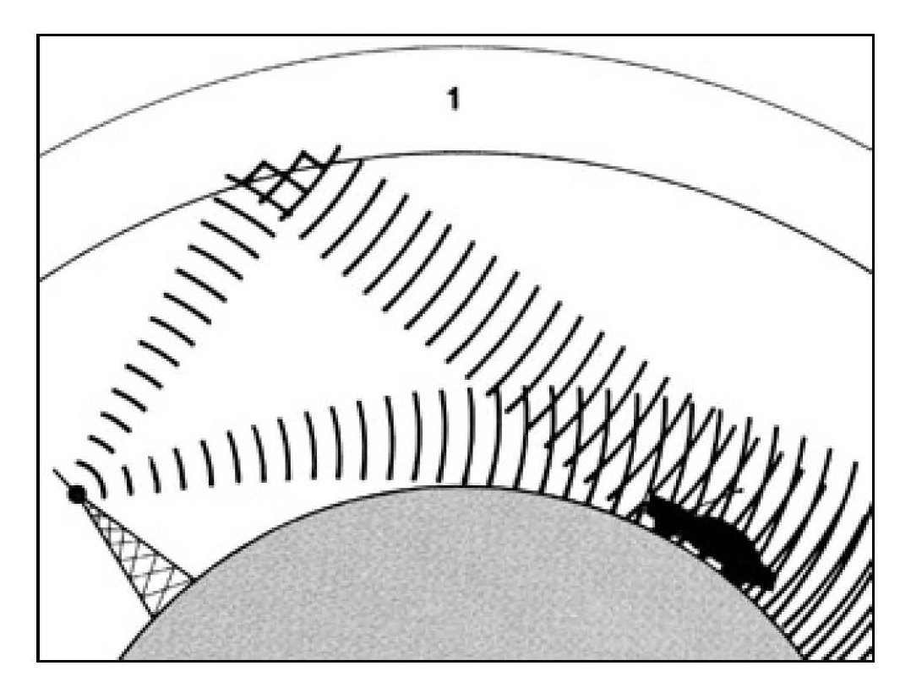
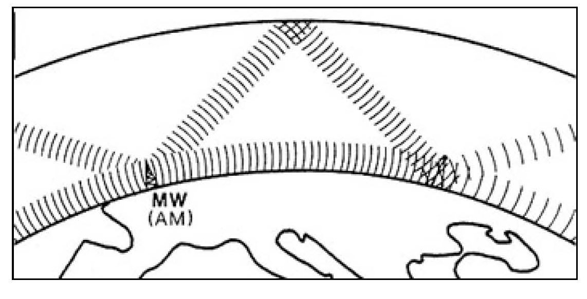
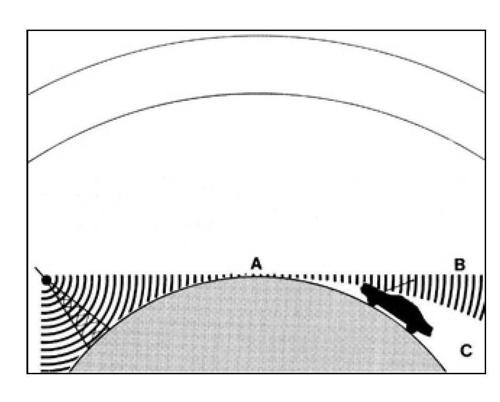
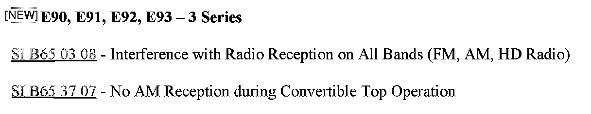
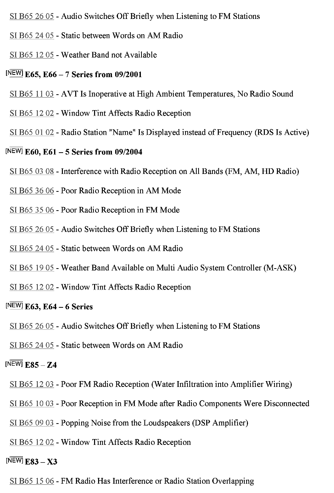
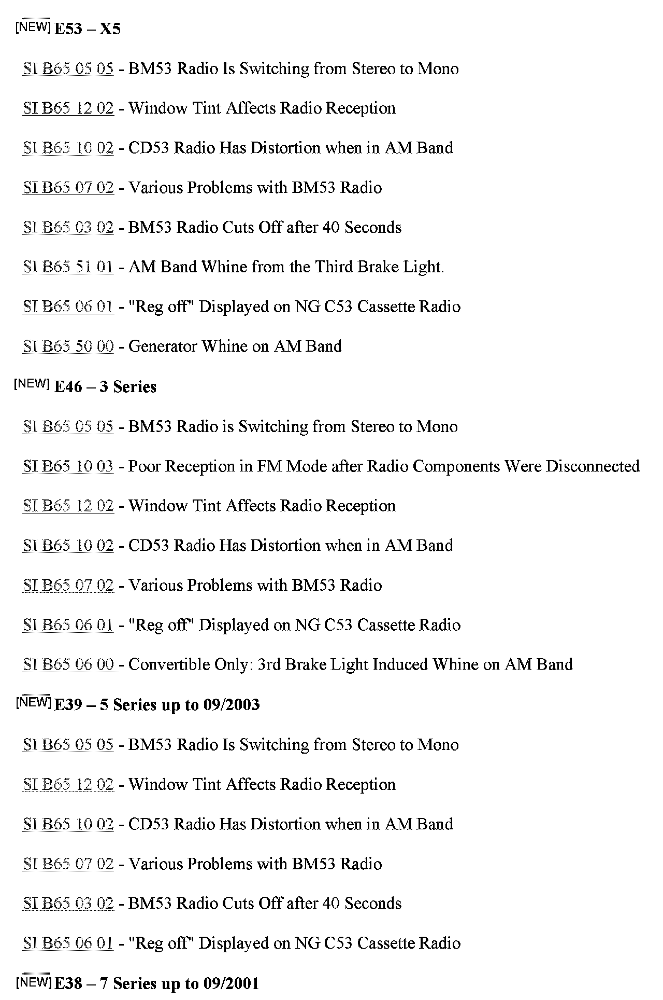
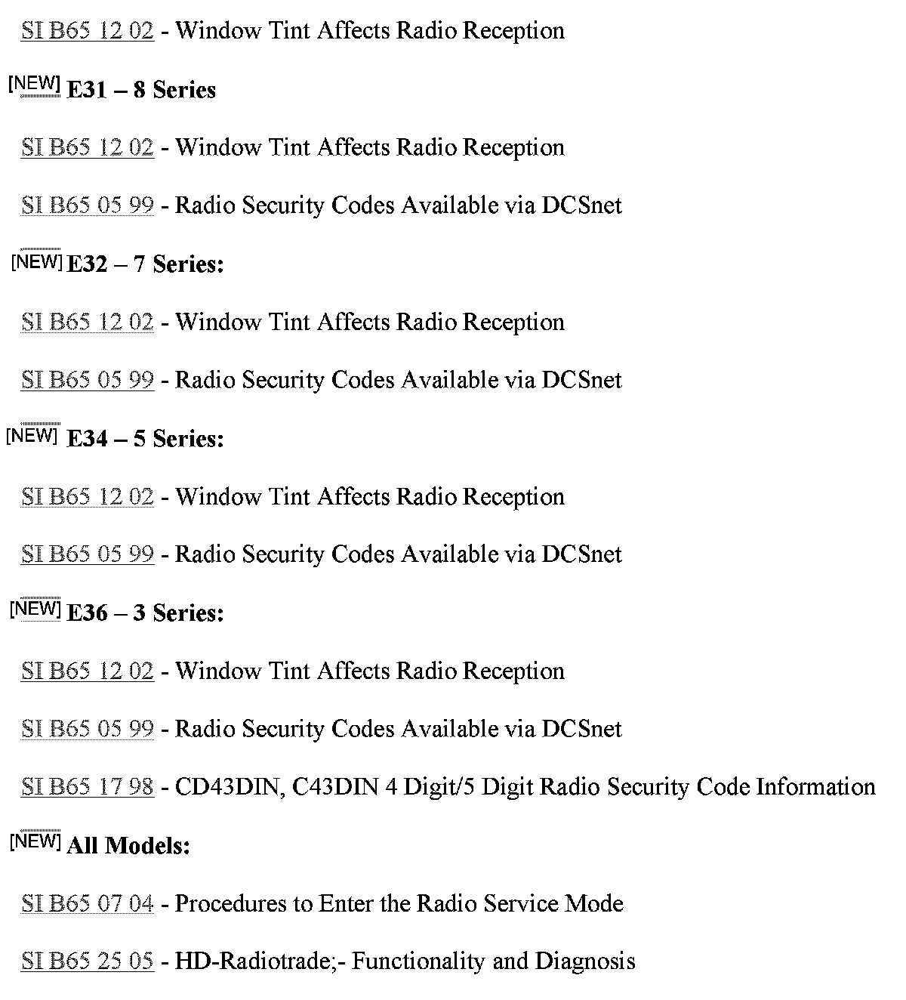

Audio System - AM/FM Radio Reception Problems
SI B65 01 04Audio, Navigation, Monitors, Alarms, SRS
July 2008
Technical Service
This Service Information bulletin supersedes SI B65 01 04 dated April 2004.
[NEW] designates changes to this revision
SUBJECT
AM/FM Radio Reception Problems Radio/Antenna Diagnosis
MODEL
All
SITUATION
Various AM/FM reception problems
CAUSE
^ Environmental conditions
^ Signal transmission problems
^ Poor electrical connections (ground or power)
^ Soiled rear window glass (film and/or residue buildup on interior/antenna grid side of the window)
^ Poor antenna connections
^ Defective parts (some addressed by SIBs for specific models and complaints)
^ Tinted windows
^ [NEW] HD radio
INFORMATION
The Antenna
Many of the problems which occur with a car and not with a home stereo system stem from the differences between home and car antennas. A home radio/TV antenna, which is considerably larger, is usually mounted on the highest point of the roof. It is often multi-directional for tuning in to the best possible reception; a home antenna always remains in one place.
On the other hand, the antenna in a car is much smaller. It sits close to the ground, rather than being high in the air. It is virtually always in motion.
Given the difficult job car antennas are asked to perform, should problems with AM/FM reception be encountered by customers, it is most likely not the fault of the BMW radio.
The stations that the customer is able to receive will depend largely upon signal strength. This varies depending upon the time of day, the season and other factors.

AM Reception
AM radio waves generally deliver a powerful, continuous signal over more than a one-hundred-mile radius from their point of origin, even in mountainous or inner-city areas. This is because AM waves are dispersed as ground waves, which follow the curvature of the earth, and space waves, which actually bounce off the upper ionosphere, creating a downward route to the automobile, no matter where it is driven.
This factor is much better at night, and also tends to be better in winter than in summer.
AM signal transmission problems
The problem with AM reception is that it is highly susceptible to electrical interference from sources such as power lines, electrical storms, and even nearby vehicles.
In the United States, due to the large number of stations, many smaller AM stations are required to sign off or reduce power sharply at sunset, in order to reduce interference with distant stations.

For AM signals, the single most important factor for good reception is the time of day. AM signals almost always get absorbed by the diffusion layer of the ionosphere during daylight hours. As a result, all AM signals received during midday hours will arrive by ground wave, making reception of signals over a few hundred miles away unusual in daylight. At night, however, the ionosphere reflects AM signals ("skywave"), making it possible for signals to be heard at much greater distances.

FM Reception
FM reception which can include the car's local Weather Band station is usually better in sound quality than AM reception. However, unlike AM waves, FM signals are weaker, delivering reception for only about forty to fifty miles under even the best conditions.
FM signal transmission problems
With FM signals, several problems can occur as a result of the way in which these signals travel and their relative lack of strength.
Dead Spots - If a direct FM wave and a reflected FM wave reach the car antenna at the same time, they will cancel each other out, creating a dead spot.
Multipath - This is similar to a dead spot in that two stations are fighting for the same general frequency. A "multipath" is an area in which a reflected FM signal is occupying a frequency very close to that of a direct signal. If the reflected wave is stronger than the direct wave, the result will be a fluttering sound as the car passes through that area. This happens very often in inner-city areas.
Fading - This occurs as the car is leaving the effective reception range of the FM station; the signal becomes weak and fuzzy. Because the range of most FM stations is only about forty miles, fading may be experienced quite often during long trips and even right in a motorist's own neighborhood - if a particular FM station is broadcasting from forty miles away or more.
Station Swapping - An FM receiver is designed to search for and lock onto the strongest signal in any area. However, if there are two stations in a given area that are broadcasting on very close frequencies, the radio may "swap" back and forth between these two stations, depending on which signal is stronger.
Stereo Broadcasts
Stereo broadcasts have an effective range of only about forty miles, unlike mono broadcasts, whose effective range is usually about fifty miles.
This means that if someone is listening to an FM stereo broadcast, and the car is thirty miles away from the transmitter, interference may be experienced. With a mono broadcast, on the other hand, such interference will not be heard until the car is approximately forty to fifty miles away from the transmitter.
The Weather Band is a special feature on some BMW radios. It is designed as a special convenience for drivers as they travel from one place to another. During a trip, the Weather Band will automatically seek out the strongest weather broadcast in any given area. When it finds a signal strong enough to lock onto, it automatically does so.
[NEW] HD Radio
HD radio has its own unique issues that affect reception quality. For more information, refer to B65 25 05.
CORRECTION
Effective radio diagnosis starts with screening the complaint. When a customer complains about a radio problem, it is very important to observe the complaint and explain the functionality to the customer (as outlined above) prior to turning the car in for diagnosing and repairing.
1. Get a detailed description of the complaint from the customer, including the precise circumstances under which the problem occurs.
2. Whenever possible, the customer should be asked to demonstrate the problem.
3. If the problem is caused by external interference, ask the customer which stations or frequencies are delivering poor reception. This will help to determine whether the problem is location or distance-related.
4. Try to determine through the customer interview whether the problem is intermittent or constant.
5. Determine whether the problem is weather or temperature-related.
Once all pertinent information relating to the complaint has been gathered, refer to the following steps:
1. Verify the customer complaint and attempt to duplicate the problem. Find out if the problem occurs on AM band, FM band or both.
On vehicles with rear window defogger/grid antennas, thoroughly clean the inside of the rear window with BMW Window Cleaner, using a lint-free cloth to eliminate any conductive coatings on the glass. The grids can easily be damaged by rubbing too strongly or using an abrasive detergent.
2. Check existing Service Information bulletins (refer to the attached list of SIs) in order to determine whether a service procedure has already been developed for the problem in question. If an SI for the problem is available, troubleshooting can begin as described in that bulletin.
3. If no information can be found in existing Service Information bulletins, it is your responsibility to decide what the logical source of the problem might be by troubleshooting the vehicle itself. If the problem appears to be in a sound system component other than the radio or some other component of the vehicle, the entire system should be diagnosed. Through system diagnosis, it is possible to find things like a loose ground wire on the antenna, or a pinched speaker cable.
4. Most of our vehicles use a diversity antenna system and may use more than one piece of glass and more than one receiver antenna for reception. Refer to the appropriate schematic to troubleshoot the system.
5. Check all connections at the antenna amplifier module, rear glass and radio. Make sure that connections are tight; check the knurled nut antenna connection at the antenna amplifier, and look for signs of damage or corrosion.
6. A poor body ground can cause a "leak" into the antenna circuit. Check all relevant grounds, including the following:
- Battery ground connection to the body
- Engine ground to body connection
- Radio ground
- Amplifier ground (if equipped)
- DSP ground (if equipped)
- Ground connections in the C-pillar for the rear glass and defrost circuit
7. Check the mounting of the antenna amplifier module. This is typically case grounded, so a loose mounting screw can cause reception problems.
8. If there is bad or no reception on either AM or FM, make sure that the coaxial cable coming from the antenna amplifier module is not internally shorted. Disconnect both ends of the cable and check for continuity between the outer and the inner conductors of the cable. There should be an open circuit between the outer and inner conductor.
9. Check to make sure that power is supplied to the antenna amplifier module (white wire = B+).
10. If the reception is ONLY affected with the defroster turned on, the problem may be:
^ The defrost trap circuits (small boxes located in the C-pillar, wired to the rear window) may be defective and can be replaced.
^ The mounting glue for the glass is forming a conductive path across multiple lines on the defroster grid.
^ There is a break in the defroster grid.
Jump your antenna inputs from your antenna amplifier to a stock (replacement) rear window or another vehicle's rear window, and retest to see whether the defroster still causes the reception loss. If yes, the fault is in the car; if no, replace the rear window.




Additional Service Informations:

Disclaimer